00Abstract
This report contrasts two consecutive training runs of the campus infrastructure detector (projector, whiteboard, fire_extinguisher, door_sign). Both runs share the same backbone (YOLOv11n, 2.6M params), input size (640 × 640), optimiser (SGD), schedule (100 epochs, patience 15), and seed (42). The only material variable is the training corpus: Batch 05 was retrained on an updated custom dataset with more balanced per-class sourcing, a larger share of in-house door-sign captures, and richer multi-instance scenes.
01Experimental setup
Both runs were executed end-to-end through the same notebook pipeline (nb01_data_collection → nb05_model_evaluation) on the same hardware and with identical hyperparameters. Because every controllable variable is held fixed, every metric delta below is attributable to the dataset change.
Raw exports (Roboflow / Kaggle / custom HUB captures)
│
[NB01] Aggregate ~200 (image, label) pairs/class
│
[NB02] Remap class IDs · stratified 70/20/10 split
│
[NB03] Health check: balance, box geometry, leakage
│
[NB04] Train YOLOv11n · 100 epochs · SGD · patience 15
│
[NB05] Evaluate on held-out test split (80 images)
│
[NB07] Export to ONNX (opset 12, dynamic axes)Identical hyperparameters
| Hyper-parameter | Value |
|---|---|
| Backbone | yolo11n.pt (pretrained COCO) |
| Image size | 640 × 640 |
| Batch | 16 |
| Optimiser | SGD · lr0=0.01 · lrf=0.01 · momentum 0.937 · weight decay 5e-4 |
| Epochs | 100 (early stop, patience = 15) |
| Augmentation | mosaic 1.0 (closed last 10 ep) · HSV-S 0.7 · HSV-V 0.4 · fliplr 0.5 · randaugment · erasing 0.4 |
| Loss weights | box 7.5 · cls 0.5 · dfl 1.5 |
| Seed | 42 · deterministic |
| AMP | enabled |
02Dataset comparison
2.1 Source availability (before capping)
The new dataset narrows the gap between over- and under-sourced classes — trimming the previously dominant fire_extinguisher pool while broadening whiteboard and adding more in-house door_sign captures.
| Class | Batch 04 pairs | Batch 05 pairs | Δ |
|---|---|---|---|
| projector | 319 | 249 | −70 |
| whiteboard | 200 | 238 | +38 |
| fire_extinguisher | 848 | 248 | −600 |
| door_sign | 240 | 244 | +4 |
2.2 Stratified split distribution
Batch 04 produced a perfectly balanced split; Batch 05 has a mild shortfall on projector after deduplication and filtering.
| Split | Batch 04 (p · w · f · d) | Batch 05 (p · w · f · d) |
|---|---|---|
| train | 140 · 140 · 140 · 140 | 123 · 140 · 140 · 140 |
| val | 40 · 40 · 40 · 40 | 36 · 40 · 40 · 40 |
| test | 20 · 20 · 20 · 20 | 18 · 20 · 20 · 20 |
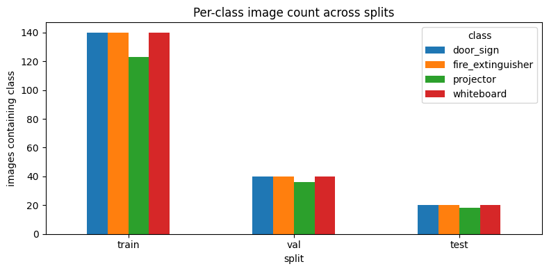
2.3 Label density and box geometry
The updated dataset is meaningfully denser in bounding boxes — Batch 05 carries 1,151 total boxes vs Batch 04's 997, despite the identical image budget. Empty-label images dropped across every split.
| Metric | Batch 04 | Batch 05 | Δ |
|---|---|---|---|
| train images | 560 | 560 | 0 |
| train boxes | 695 | 810 | +115 |
| train empty labels | 25 | 17 | −8 |
| val boxes | 200 | 229 | +29 |
| val empty labels | 7 | 4 | −3 |
| test boxes | 102 | 112 | +10 |
| test empty labels | 3 | 2 | −1 |
| tiny boxes (all splits) | 0 | 1 | +1 |

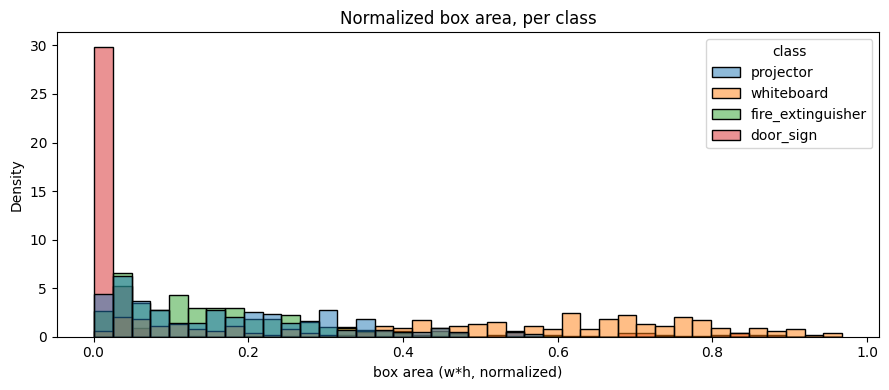

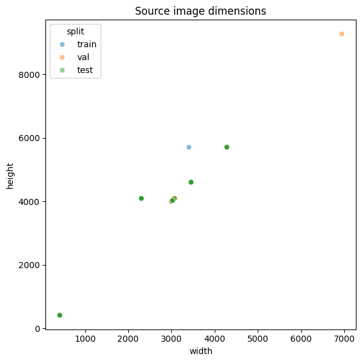


03Training dynamics
3.1 Best-epoch summary
| Metric | Batch 04 | Batch 05 | Δ |
|---|---|---|---|
| Epochs trained | 100 | 87 · early stop | −13 |
| Best epoch | 60 | 70 | +10 |
| Best val mAP@0.5 | 0.9489 | 0.9874 | +0.0385 |
| Best val mAP@0.5:0.95 | 0.7251 | 0.8134 | +0.0883 |
| Final train box loss | 0.5109 | 0.5632 | +0.0523 |
| Final train cls loss | 0.3839 | 0.3976 | +0.0137 |
| Final val box loss | 0.8409 | 0.6743 | −0.1666 |
| Final val cls loss | 0.5516 | 0.4186 | −0.1330 |
3.2 Training curves
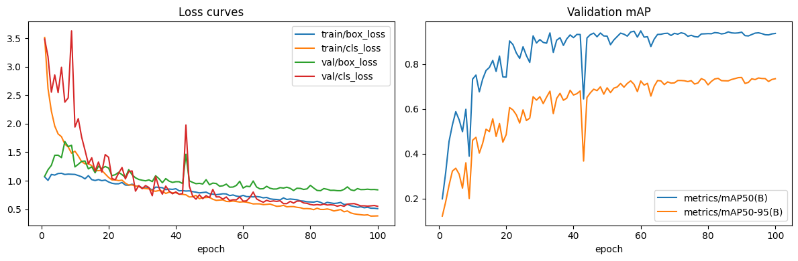
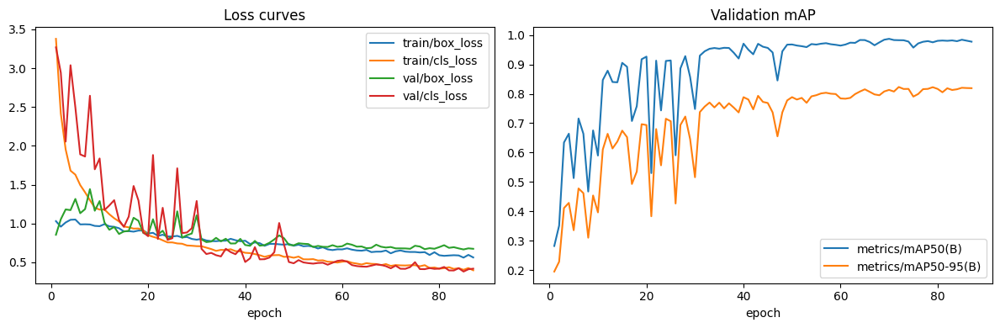
3.3 Sanity predictions (training-time)
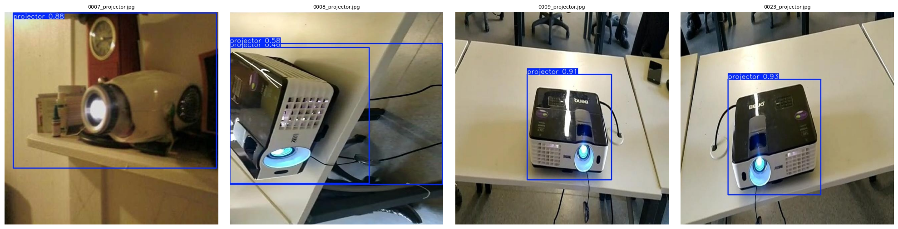
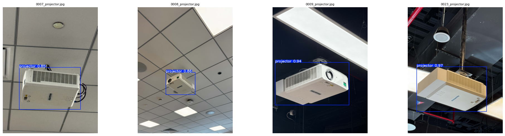
04Test evaluation — held-out · 80 images
4.1 Overall metrics
| Metric | Batch 04 | Batch 05 | Δ |
|---|---|---|---|
| mAP@0.5 | 0.9332 | 0.9876 | +0.0544 |
| mAP@0.5:0.95 | 0.7959 | 0.8728 | +0.0769 |
| Precision (macro) | 1.0000 | 1.0000 | 0.0000 |
| Recall (macro) | 0.8613 | 0.9804 | +0.1191 |
4.2 Per-class metrics
| Class | Metric | Batch 04 | Batch 05 | Δ |
|---|---|---|---|---|
| projector | precision | 1.000 | 1.000 | 0.000 |
| recall | 0.8036 | 1.0000 | +0.1964 | |
| mAP@0.5 | 0.8964 | 0.9950 | +0.0986 | |
| mAP@0.5:0.95 | 0.7290 | 0.9377 | +0.2087 | |
| whiteboard | precision | 1.000 | 1.000 | 0.000 |
| recall | 0.7625 | 0.9500 | +0.1875 | |
| mAP@0.5 | 0.8761 | 0.9750 | +0.0989 | |
| mAP@0.5:0.95 | 0.7767 | 0.9413 | +0.1646 | |
| fire_extinguisher | precision | 1.000 | 1.000 | 0.000 |
| recall | 0.9565 | 1.0000 | +0.0435 | |
| mAP@0.5 | 0.9780 | 0.9950 | +0.0170 | |
| mAP@0.5:0.95 | 0.9045 | 0.8762 | −0.0283 | |
| door_sign | precision | 1.000 | 1.000 | 0.000 |
| recall | 0.9224 | 0.9714 | +0.0490 | |
| mAP@0.5 | 0.9822 | 0.9855 | +0.0033 | |
| mAP@0.5:0.95 | 0.7733 | 0.7359 | −0.0374 |
The two weakest classes in Batch 04 — projector and whiteboard — were the largest beneficiaries. Both now sit above 0.975 mAP@0.5 and break 0.94 mAP@0.5:0.95. The minor regressions on the stricter mAP@0.5:0.95 metric for fire_extinguisher and door_sign are localised tightness losses; both classes still record higher recall and higher mAP@0.5.
4.3 Precision–Recall curves
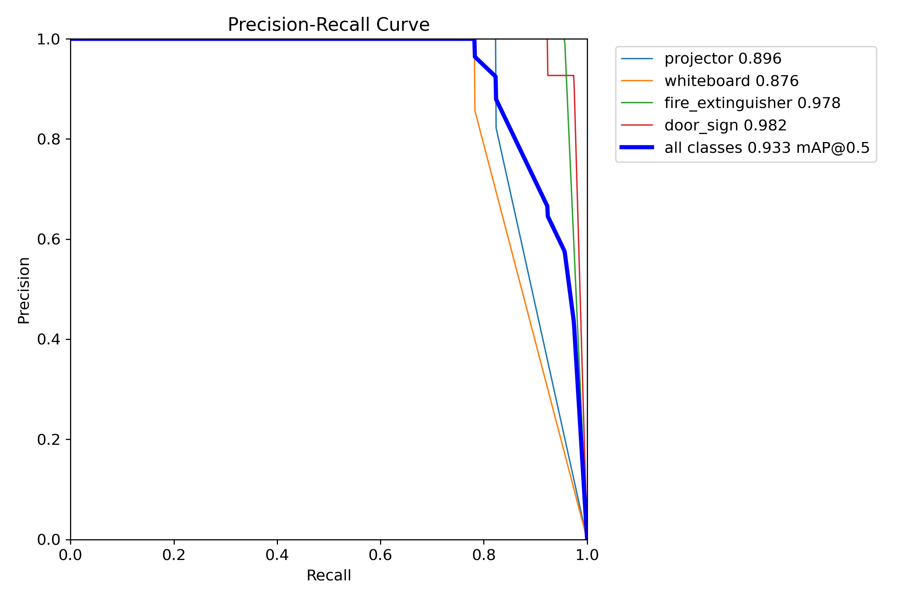

4.4 F1 curves

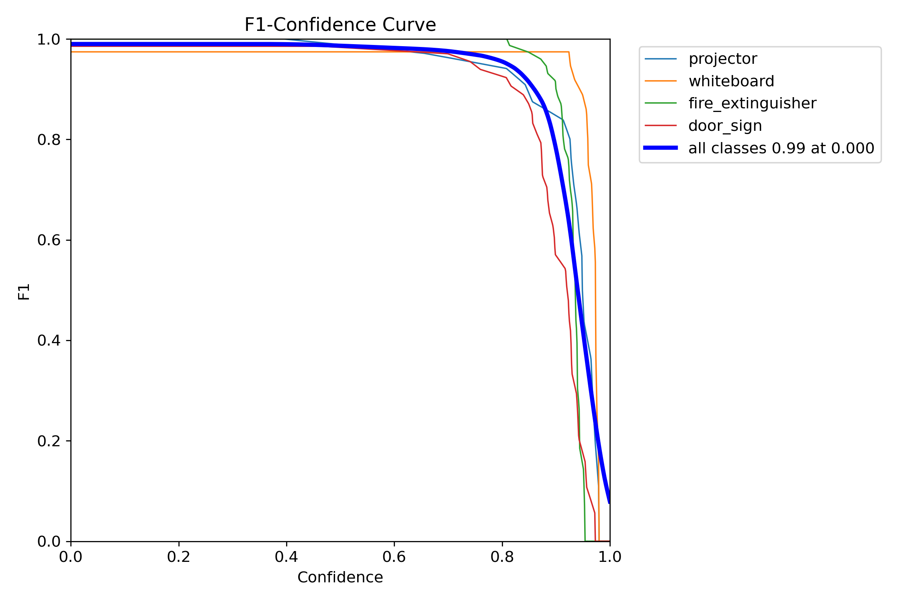
4.5 Confusion matrices · normalised

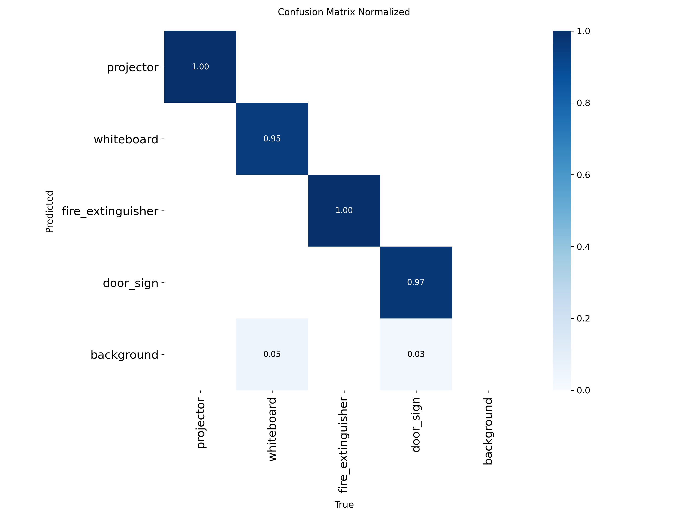
4.6 Confusion matrices · custom view
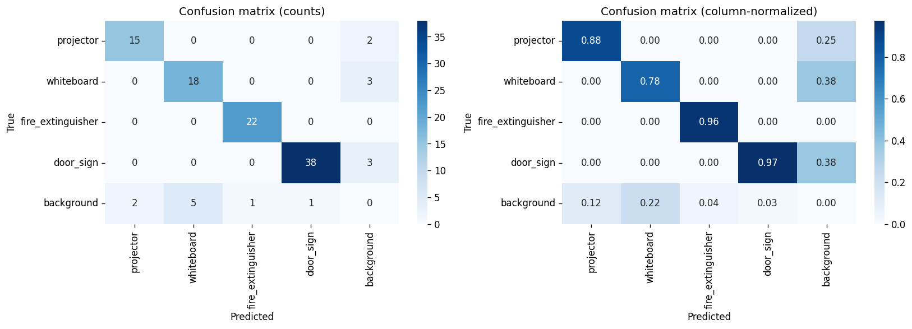
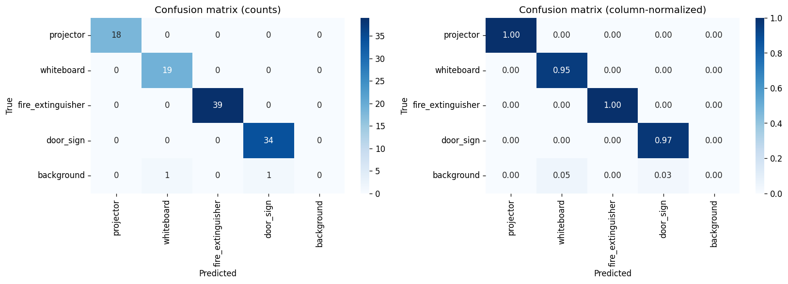
4.7 Qualitative predictions

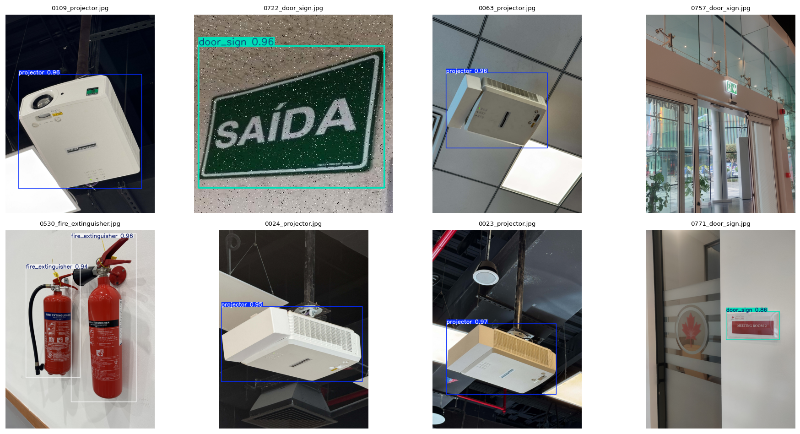
05Discussion
5.1 Why did Batch 05 win?
The improvement is not a hyperparameter win — every knob was identical. Three dataset-level changes explain the lift:
- Better source balance. Batch 04's
fire_extinguisherpool (848 candidates) andprojectorpool (319) dominated the cap-to-200 step, so surviving training images were drawn from a narrow style distribution. Batch 05's source pools sit between 238–249 across all four classes — the cap is a much shallower filter and per-class style coverage is broader. - More custom in-house data. Batch 05 adds more HUB-campus captures to the
door_signset with materially different framing variety, and the new captures broaden theprojectorandwhiteboarddistributions toward real classroom conditions — which the test split also samples. - Multi-instance scenes. Total annotated boxes climbed from 997 → 1,151 (+15.4%) at constant image count. The model sees more boxes per gradient step and learns to handle co-occurring objects, lifting recall and the stricter IoU buckets that dominate mAP@0.5:0.95.
5.2 Why early-stop at 87 epochs?
The patience-15 trigger fired because val mAP plateaued shortly after the epoch-70 best. Combined with the lower final val losses, Batch 05 reached a flatter optimum earlier — more data of higher quality reduced the gradient steps needed to saturate.
5.3 Train-loss vs val-loss split
A higher train loss with a lower val loss is the canonical "more representative training data" outcome. Batch 05's training set is harder (more boxes per image, more scene variety) but the model that learns to fit it transfers cleanly to val and test.
5.4 Remaining failure modes
door_sign and fire_extinguisher retained the same recall ceiling on the strict 0.5:0.95 IoU band (−2.8 to −3.7 pp). These two classes are the smallest in absolute pixel area in the test split, so sub-pixel localisation drift is penalised. A follow-up batch should consider:
- Higher-resolution training (
imgsz=896or1024) for small-object refinement. - Stronger geometric augmentation (
scale=0.75,degrees=10) to teach tighter localisation under perspective. - A YOLOv11s upgrade (9.4M params) — the
variant_comparison.csvslot is reserved for this experiment.
06Conclusion
Re-training on the updated custom dataset — same model, same hyperparameters, same seed — moved every meaningful headline metric in the right direction:
- +5.4 pp test mAP@0.5 → 0.9876
- +7.7 pp test mAP@0.5:0.95 → 0.8728
- +11.9 pp macro recall at unchanged precision (1.0) → 0.9804
- Three of four classes now exceed mAP@0.5 = 0.985; the fourth sits at 0.975
model_outputs/04_training_batch_1_48am_24_04_2026/ and model_outputs/05_training_batch_12_06am_12_05_2026/. Top-level Batch 05 ONNX: 05_model_weights/best.onnx. Source notebooks under notebooks/01..08.